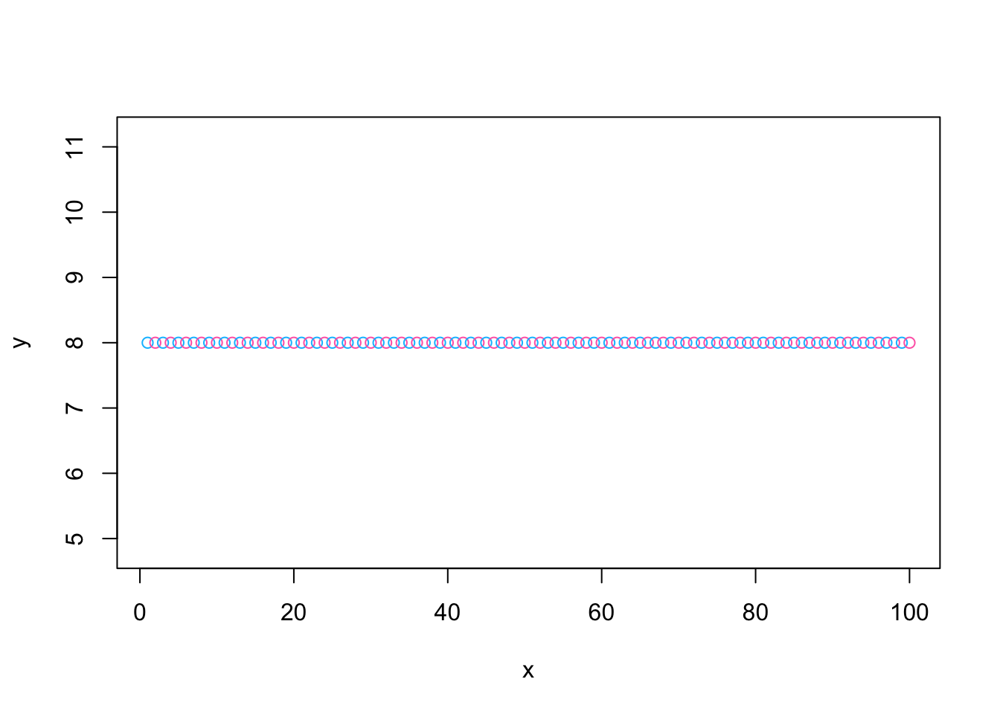
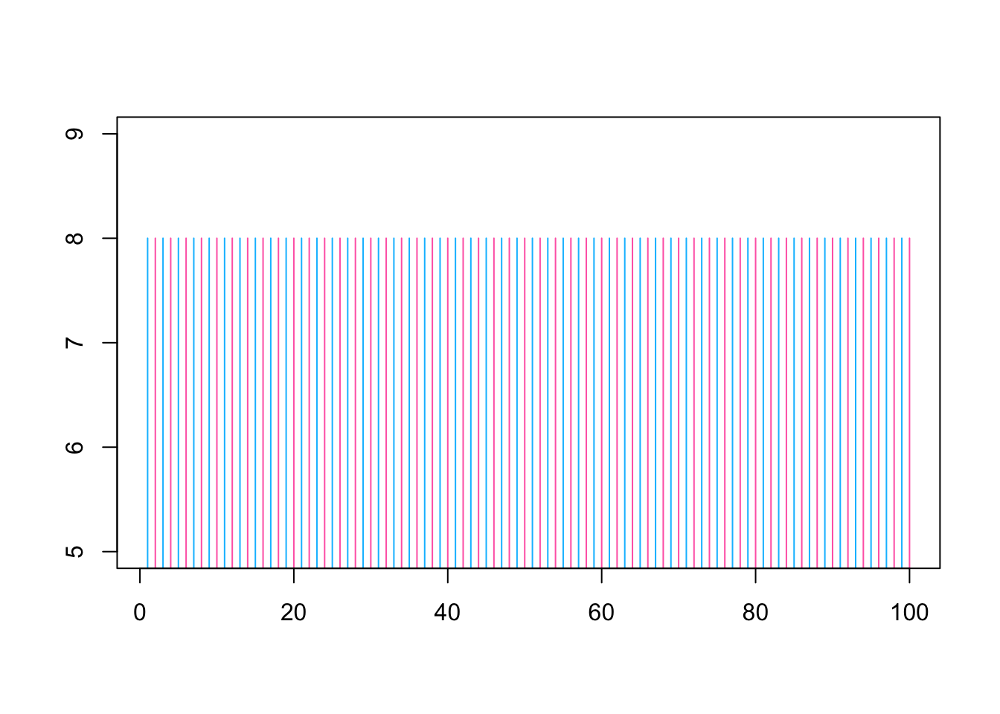

v1 <- seq(from=1,to=103,by=3)STAT120 - Statistical Computing in R
Homework 1
Download R and RStudio locally on your computer and install them. Speak to me as soon as possible if you have any questions.
Part I
- Create and store a vector of values starting at 1 and ending at 103, with the values increasing in increments of 3.
Show solution
- Add 4 to each of the values in the vector from problem 1. Store the new vector.
Show solution
v2 <- v1+4- Remove the 8th value from the vector in problem 2 and store the new vector.
Show solution
v3 <- v2[-8]- Add the values 50 and 39 to the end of the vector in problem 3 and store the new vector.
Show solution
v4 <- c(v3,50,39)- Find the sum of the elements of the vector from problem 4. Note: You should get 2,023.
Show solution
sum(v4)[1] 2023- Using an
Rfunction, find the length of the vector in problem 5.
Show solution
length(v4)[1] 36- Create a character vector of length 3,
color.list, that stores three colors:deepskyblue,hotpink, andseagreen(in this order).
Show solution
color.list <- c('deepskyblue','hotpink','seagreen')- Create a numeric vector of length 100,
color.index, that looks like \((1,2,1,2,1,2,\ldots)\). Hint: use therep()function to repeat the vector \((1,2)\) 50 times.
Show solution
color.index <- rep(c(1,2),50)- Use the vector from problem 8 to index the color vector in problem 7 and create a new vector that looks like (‘deepskyblue’, ‘hotpink’, ‘deepskyblue’, ‘hotpink’, …)
Show solution
mycol <- color.list[color.index]
mycol [1] "deepskyblue" "hotpink" "deepskyblue" "hotpink" "deepskyblue"
[6] "hotpink" "deepskyblue" "hotpink" "deepskyblue" "hotpink"
[11] "deepskyblue" "hotpink" "deepskyblue" "hotpink" "deepskyblue"
[16] "hotpink" "deepskyblue" "hotpink" "deepskyblue" "hotpink"
[21] "deepskyblue" "hotpink" "deepskyblue" "hotpink" "deepskyblue"
[26] "hotpink" "deepskyblue" "hotpink" "deepskyblue" "hotpink"
[31] "deepskyblue" "hotpink" "deepskyblue" "hotpink" "deepskyblue"
[36] "hotpink" "deepskyblue" "hotpink" "deepskyblue" "hotpink"
[41] "deepskyblue" "hotpink" "deepskyblue" "hotpink" "deepskyblue"
[46] "hotpink" "deepskyblue" "hotpink" "deepskyblue" "hotpink"
[51] "deepskyblue" "hotpink" "deepskyblue" "hotpink" "deepskyblue"
[56] "hotpink" "deepskyblue" "hotpink" "deepskyblue" "hotpink"
[61] "deepskyblue" "hotpink" "deepskyblue" "hotpink" "deepskyblue"
[66] "hotpink" "deepskyblue" "hotpink" "deepskyblue" "hotpink"
[71] "deepskyblue" "hotpink" "deepskyblue" "hotpink" "deepskyblue"
[76] "hotpink" "deepskyblue" "hotpink" "deepskyblue" "hotpink"
[81] "deepskyblue" "hotpink" "deepskyblue" "hotpink" "deepskyblue"
[86] "hotpink" "deepskyblue" "hotpink" "deepskyblue" "hotpink"
[91] "deepskyblue" "hotpink" "deepskyblue" "hotpink" "deepskyblue"
[96] "hotpink" "deepskyblue" "hotpink" "deepskyblue" "hotpink" - Create a numeric sequence
xthat goes from 1 to 100; create another numeric sequenceythat repeats the value 8 for 100 times. UseRto check that bothxandyhave lengths of 100.
Show solution
x <- c(1:100)
y <- rep(8,100)
length(x)[1] 100length(y)[1] 100- Use the vectors in problem 10 to perform the following calculation: \[{1\times8 + 2\times8 + 3\times8 + \ldots + 100 \times 8}.\] You should get \(40400\).
Show solution
sum(x*y)[1] 40400- Create a scatterplot using the vectors in problem 10. Vector
xshould be on the x axis; vectoryshould be on the y axis. Set the color to the color vector you created in problem 9.
Show solution
plot(x,y,col=mycol)
- Do the scatterplot from problem 12 again, but add these arguments: set
xlabandylabtoNA, settypeto"h", and setylimtoc(5, 9). Pay attention to what each argument does.
Show solution
plot(x,y,col=mycol,xlab=NA,ylab=NA,type='h',ylim=c(5,9))
Part II
In this part, we’ll use the built-in dataset mtcars to practice subsetting. Run the dataset to print it out and run ?mtcars to bring up the help page, so that you know what the variables are.
As you see, the dataset contains 11 variables (mpg, cyl, disp, etc.), each of which is a numeric vector. To get one of these vectors, such as mpg, you can use mtcars$mpg. Alternatively, run attach(mtcars) first and then use mpg directly. In other words, you can use either syntax below to calculate the average mpg. If you decide to attach the dataset, you only need to do it once at the beginning.
mean(mtcars$mpg)
### OR ###
attach(mtcars)
mean(mpg)- Run the following code, which creates a new character vector,
model, that stores the models of the cars in the dataset.
mtcars$model <- row.names(mtcars)- Print out
modelandam(transmission type) of the first car.
Show solution
attach(mtcars)
model[1][1] "Mazda RX4"am[1][1] 1- Print out
modelandamof the first, second, and 10th car.
Show solution
model[c(1,2,10)][1] "Mazda RX4" "Mazda RX4 Wag" "Merc 280" am[c(1,2,10)][1] 1 1 0- Print out
amandmpgof “Toyota Corona”.
Show solution
am[model=='Toyota Corona'][1] 0mpg[model=='Toyota Corona'][1] 21.5- Print
modelfor all automatic (am) cars.
Show solution
model[am==0] [1] "Hornet 4 Drive" "Hornet Sportabout" "Valiant"
[4] "Duster 360" "Merc 240D" "Merc 230"
[7] "Merc 280" "Merc 280C" "Merc 450SE"
[10] "Merc 450SL" "Merc 450SLC" "Cadillac Fleetwood"
[13] "Lincoln Continental" "Chrysler Imperial" "Toyota Corona"
[16] "Dodge Challenger" "AMC Javelin" "Camaro Z28"
[19] "Pontiac Firebird" - Print
modelfor all cars whose weight (wt) is larger than 5.
Show solution
model[wt>5][1] "Cadillac Fleetwood" "Lincoln Continental" "Chrysler Imperial" - Print
modelandmpgfor all cars whosempgis smaller than 16.
Show solution
data.frame(model = model[mpg<16], mpg = mpg[mpg<16]) model mpg
1 Duster 360 14.3
2 Merc 450SLC 15.2
3 Cadillac Fleetwood 10.4
4 Lincoln Continental 10.4
5 Chrysler Imperial 14.7
6 Dodge Challenger 15.5
7 AMC Javelin 15.2
8 Camaro Z28 13.3
9 Ford Pantera L 15.8
10 Maserati Bora 15.0